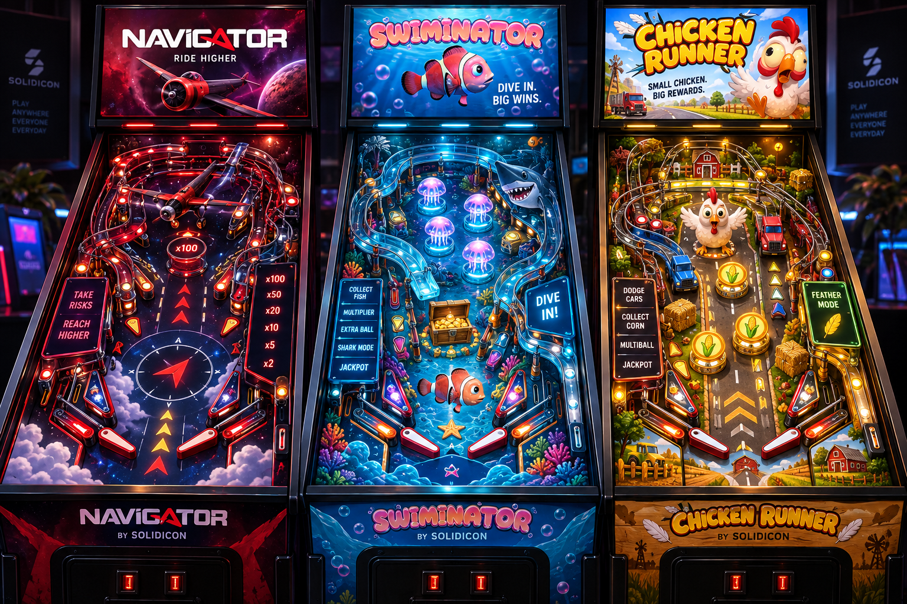
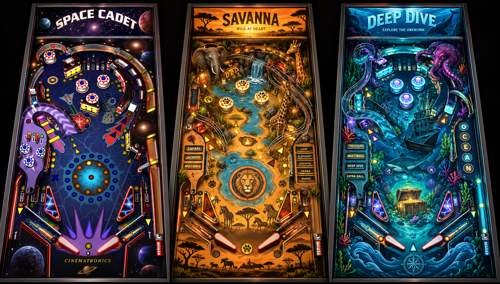

SOLIDICON · PITCH DAY · MÁLAGA
GAME PITCH
Pinball 22,000.
A pinball table with a live multiplier that starts at zero.
SOLIDICON · PITCH DAY · MÁLAGA
UPHILL BATTLE
I know how this sounds.
- Daniel P pitched a plinko-ish game last year
- We've done a few plinko games before
- Plinko doesn't travel well outside Asia, and we're not there
SOLIDICON · PITCH DAY · MÁLAGA
WHY PINBALL
Nostalgic. Flashy. Already casino.
- People love the look of a pinball machine
- But no flippers, and no long rounds. That won't work
- Original Supershoot: rounds too long. A few similar games do OK on Stake
- I've not seen a pinball casino game anywhere. So here's my take
SOLIDICON · PITCH DAY · MÁLAGA
MY TAKE
It fixes Supershoot.
- Same math as Supershoot, dressed as a pinball table
- Rounds are short. Plinko feel, but way more bouncing
- Multiplier can go anywhere, and it can go very high
- You can walk away with 0. Supershoot never had excitement when you got 0
- Near-win excitement even when you lose
SOLIDICON · PITCH DAY · MÁLAGA
PLAY IT NOW
SCAN TO PLAY
solidicon-ab.github.io/pinball
SOLIDICON · PITCH DAY · MÁLAGA
RESKIN POSSIBILITIES
Any theme. Any brand.


SOLIDICON · PITCH DAY · MÁLAGA
And that's my pitch.
solidicon-ab.github.io/pinball